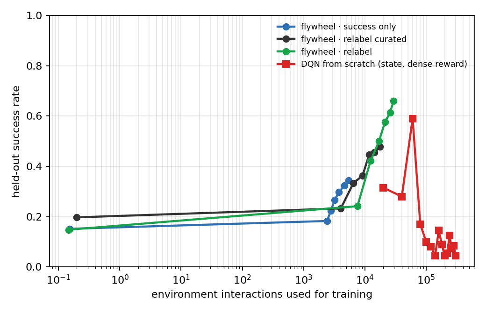
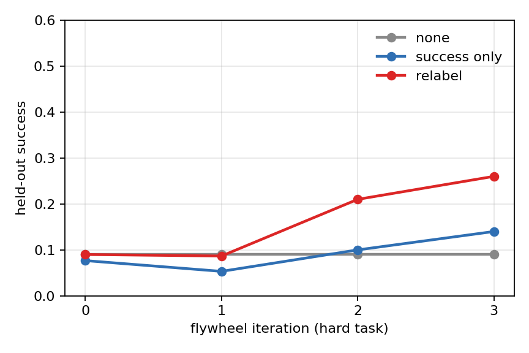

Label efficiency — what does the loop actually cost?
The flywheel's training interaction (29,297 environment steps) versus DQN from scratch (300,000). DQN gets the full state and a dense reward — and still lands at 0.0.04. Milestones: 20,000 steps → 0.32 · 40,000 steps → 0.28 · 60,000 steps → 0.59 · 80,000 steps → 0.17 · 100,000 steps → 0.10 · 120,000 steps → 0.08 · 140,000 steps → 0.04 · 160,000 steps → 0.14 · 180,000 steps → 0.09 · 200,000 steps → 0.04 · 220,000 steps → 0.06 · 240,000 steps → 0.12 · 260,000 steps → 0.07 · 280,000 steps → 0.09 · 300,000 steps → 0.04.


